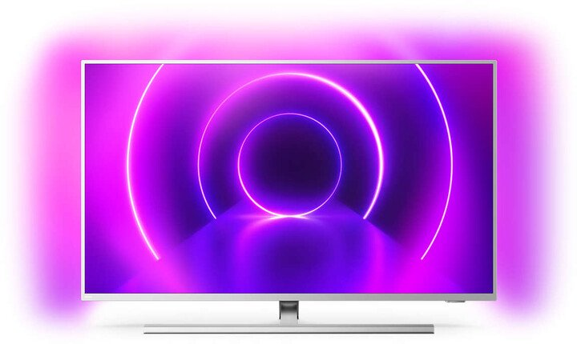
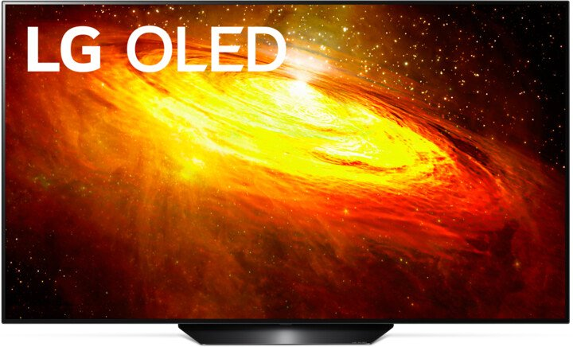
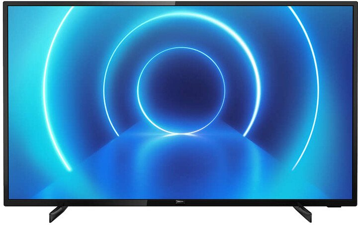

Televize LED s rozlišením 4K UHD (3840 x 2160 px). Úhlopříčka 43"/108 cm. SMART TV s OS Tizen. Technologie PurColor, HDR, Ambient, Dolby Digital Plus. Index kvality 2000. Typ tuneru DVB-T/T2/C/S/S2. Wi-Fi. Bluetooth. Energetická třída A.
8 890 Kč
Philips 58PUS8505

Televize LED s rozlišením UHD (3840 x 2160 px). Úhlopříčka 58"/146 cm. Smart TV. Technologie HDR10+, Dolby Vision, Dolby Atmos, Ambilight. Frekvence panelu 50Hz. Typ tuneru DVB-C/T/T2/S/S2. Wi-Fi, Bluetooth.
16 990 Kč
LG OLED55BX

elevize OLED s rozlišením 4K (3840 x 2160 px). Úhlopříčka 55"/139 cm. Smart TV s OS webOS SMART TV. Technologie HDR, Dolby Vision, Dolby Audio, LG ThinQ Al, FilmMaker Mode, nVidia a G-Sync, sportovní upozornění, Amazon Alexa a Google Assistant. Typ tuneru DVB-C/T/T2/S/S2. Wi-Fi. Bluetooth.
23 990 Kč
Philips 43PUS7505

Televize LED s rozlišením 4K (3840 x 2160 px). Úhlopříčka 43"/108 cm. Smart TV. Technologie HDR10+, Dolby Atmos, Dolby Vision, Engine Philips P5 Perfect Picture. Typ tuneru C/T/T2/S/S2. Wi-Fi.